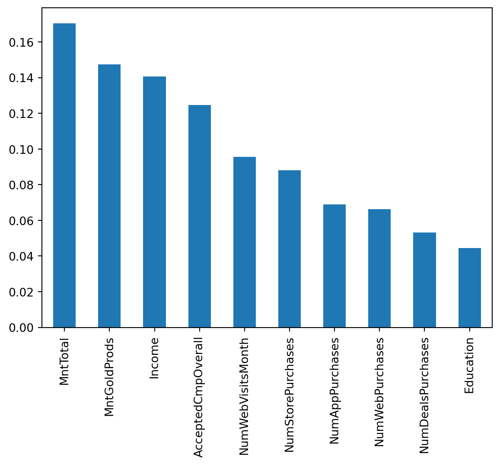
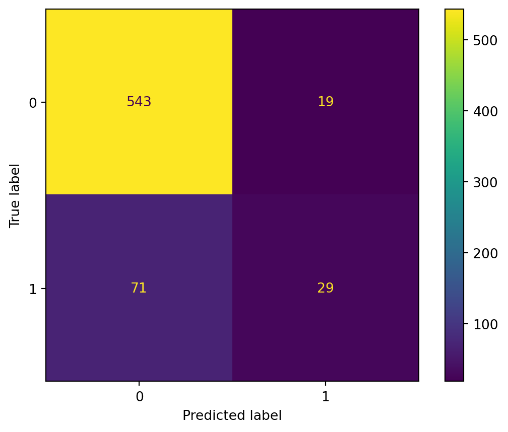

# Libraries
import pandas as pd
import numpy as np
import matplotlib.pyplot as plt
from sklearn.preprocessing import OrdinalEncoder, StandardScaler, OneHotEncoder
from sklearn.pipeline import Pipeline
from sklearn.compose import ColumnTransformer
from sklearn.model_selection import train_test_split
from sklearn.tree import DecisionTreeClassifier
from sklearn.ensemble import RandomForestClassifier
from sklearn.metrics import classification_report, confusion_matrix, roc_auc_score, roc_curve, accuracy_score, ConfusionMatrixDisplay
from sklearn.model_selection import train_test_split, GridSearchCV, RandomizedSearchCV
# Path
path = "~/Downloads/"Lab 4 – Supervised Learning - Classification
Setup
Libraries & Paths
Python
1. Data Quality & Cleaning
Loading in
# Read in
data = pd.read_csv(path + "campaign_offer_rev-1.csv")
# Duplication check
print("Duplicates: ", data.duplicated().sum())
# Missing Values
missing = [col for col in data.columns if data[col].isnull().sum() > 0]
data[missing].isnull().sum() / len(data)Duplicates: 0Income 0.136961
Age 0.058503
Recency 0.202721
AcceptedCmpOverall 0.146032
dtype: float64Identification
For data-cleaning, I looked for duplicates, missing values, and erroneous values. I identified duplicates by using its function. I created a list of columns with missing values and displayed each proportion. For anomalies, I quickly scanned through the first part of the spreadsheet so that I could understand each feature better and notice inconsistencies.
Imputations
# median imputation for Income
data['Income'] = data['Income'].fillna(data['Income'].median())
# median imputation for Recency
data['Recency'] = data['Recency'].fillna(data['Recency'].median())
# median imputation for age
data['Age'] = data['Age'].fillna(data['Age'].median())
# logical imputation for AcceptedCmpOverall
data['AcceptedCmpOverall'] = data['AcceptedCmpOverall'].fillna(1)
data.isnull().sum().sum()np.int64(0)Explanation
Since the first three missing value columns had relatively low percentages, I chose to median impute the values to keep the rows and avoid a skewed mean. For ‘AcceptedCmpOverall’, I wanted to find out if there was a correlation between the other 5 ‘AcceptedCmp” values and the missing overall values. After investigating, it became abundantly clear that the value ‘1’ was missing, and all rows with an NaN ‘AcceptedCmpOverall’ values had ’AcceptedCmp 1-5 values that added to 1. So I logically filled with NaN’s with 1.
Erroneous Values
data['Kidhome'] = data['Kidhome'].replace('No', 0)
data['Kidhome'] = data['Kidhome'].replace('Yes', 1)
data['Kidhome'] = data['Kidhome'].replace('2', 2)
data['Teenhome'] = data['Teenhome'].replace('No', 0)
data['Teenhome'] = data['Teenhome'].replace('Yes', 1)
data['Teenhome'] = data['Teenhome'].replace('2', 2)Explanation
After scanning the spreadsheet, I noticed that both ‘Kidhome’ and ‘Teenhome’ columns contained rare values of ‘2’ rather than ‘Yes’, or ‘No’. After considering what this value could mean, I decided that it meant 2 children/teens. I also was forced to consider whether to keep this feature as a bool and map ‘2’ to ‘Yes’, or convert both columns to numeric. I decided to replace all values with their corresponding numeric value to maintain the 2’s and allow for more information.
2. Variable Types & Transformations
Types
print(data.dtypes)
# Integer conversion
data['Teenhome'] = data['Teenhome'].astype('int64')
data['Kidhome'] = data['Kidhome'].astype('int64')
data['AcceptedCmpOverall'] = data['AcceptedCmpOverall'].astype('int64')
# Categorical conversion
data['Response'] = data['Response'].astype('category')
# Irrelevant cols
data = data.drop('CustID', axis=1)
print(data.dtypes)CustID int64
Marital_Status object
Education object
Kidhome int64
Teenhome int64
AcceptedCmp3 int64
AcceptedCmp4 int64
AcceptedCmp5 int64
AcceptedCmp1 int64
AcceptedCmp2 int64
Complain int64
Income float64
Age float64
Recency float64
MntWines int64
MntFruits int64
MntMeatProducts int64
MntFishProducts int64
MntSweetProducts int64
MntGoldProds int64
NumDealsPurchases int64
NumWebPurchases int64
NumAppPurchases int64
NumStorePurchases int64
NumWebVisitsMonth int64
MntTotal int64
MntRegularProds int64
AcceptedCmpOverall float64
Response int64
dtype: object
Marital_Status object
Education object
Kidhome int64
Teenhome int64
AcceptedCmp3 int64
AcceptedCmp4 int64
AcceptedCmp5 int64
AcceptedCmp1 int64
AcceptedCmp2 int64
Complain int64
Income float64
Age float64
Recency float64
MntWines int64
MntFruits int64
MntMeatProducts int64
MntFishProducts int64
MntSweetProducts int64
MntGoldProds int64
NumDealsPurchases int64
NumWebPurchases int64
NumAppPurchases int64
NumStorePurchases int64
NumWebVisitsMonth int64
MntTotal int64
MntRegularProds int64
AcceptedCmpOverall int64
Response category
dtype: objectJustification
After correcting the erroneous kid/teen columns, I converted them to numeric. I understood that this assignment revolved around a categorical target, to I changed that as well. I dropped the ‘CustID’ column because it has no relevance to supervised learning.
3. Feature Selection
Initial Set
initial_features = [
'AcceptedCmp3', 'AcceptedCmp4',
'AcceptedCmp5', 'AcceptedCmp1',
'AcceptedCmp2', 'Complain',
'MntGoldProds', 'NumDealsPurchases',
'NumWebPurchases', 'NumAppPurchases',
'NumStorePurchases', 'NumWebVisitsMonth',
'MntTotal', 'MntRegularProds',
'Marital_Status', 'Income',
'Education', 'AcceptedCmpOverall'
]
len(initial_features)18Explanation
My goals with my initial feature list were to have a surplus and to include my curiosities. I was most confident that the ‘AcceptedCmp’ columns would be the most related to the target. I wanted to include purchase history columns because they indicate a relation to the business. I was less concerned with personal information columns. I did not want to leave out many columns because I wanted to analyze many importances.
4. Preprocessing Pipeline
Sketch
- Types- bool, numeric, categorical, encoded
- Bool: identified manually - no transformation
- Numeric: ints and floats - scale
- Categorical: target, no transformation
- Encoded: identified manually, one-hot or ordinal (martial status and education)
Explanation
Ordering steps when creating a supervised learning pipeline is crucial because of data leakage. It is important to develop a clean dataset (missing values, anomalies, etc.) that can be used for both testing and training. However, it is crucial not to do any extra steps (scaling, encoding, etc.) because that is not the exact same data that a real-life record would be. The test cannot know these changes.
5. Model 1 Choice & Tuning
Test Preperation
# split features
X = data[initial_features]
y = data['Response']
# split into train/testing
X_train, X_test, y_train, y_test = train_test_split(
X, y,
test_size=0.3,
random_state=42,
stratify=y
)
# dimensionality
print(f"X_train shape: {X_train.shape}")
print(f"X_test shape: {X_test.shape}")
print(f"y_train shape: {y_train.shape}")
print(f"y_test shape: {y_test.shape}")X_train shape: (1543, 18)
X_test shape: (662, 18)
y_train shape: (1543,)
y_test shape: (662,)Preprocessing
bin_features = ['AcceptedCmp1', 'AcceptedCmp2', 'AcceptedCmp3',
'AcceptedCmp4', 'AcceptedCmp5', 'Complain']
num_features = X_train.select_dtypes(include=['float64', 'int64']).columns.tolist()
for f in bin_features:
if f in num_features:
num_features.remove(f)
one_hot_features = ['Marital_Status']
ordinal_features = ['Education']
edu_categories = ['HighSchool', 'Secondary', 'Bachelors', 'Masters', 'PhD']
# column transformer
preprocessor = ColumnTransformer(
transformers=[
('binary', 'passthrough', bin_features),
('numeric', StandardScaler(), num_features),
('one_hot', OneHotEncoder(handle_unknown='ignore'), one_hot_features),
('ordinal', OrdinalEncoder(categories=[edu_categories]), ordinal_features)
]
)Pipeline
dt_pipeline = Pipeline(
[
('preprocessor', preprocessor),
('dt', DecisionTreeClassifier(class_weight='balanced',
random_state=42
)
)
]
)Explanation
I chose a decision tree as my baseline model primarily because of its simplicity. My goal with the first model was efficiency, understandability, and ease of use. I wanted to make a model quickly to understand the benchmark for scores and feature importances. A decision tree offers this simplicity and works well with categorical targets.
Tuning strategy
dt_params = {
'dt__criterion': ['gini', 'entropy'],
'dt__max_depth': [3, 5, 7, 10, None],
'dt__min_samples_leaf': [1, 5, 10, 20]
}dt_random_search = RandomizedSearchCV(dt_pipeline,
param_distributions=dt_params,
n_iter=10,
scoring='accuracy',
cv=5,
random_state=42
)
dt_random_search.fit(X_train, y_train)
print("Best parameters found: ", dt_random_search.best_params_)
print("Best CV Score: ", dt_random_search.best_score_)
dt_best = dt_random_search.best_estimator_ Best parameters found: {'dt__min_samples_leaf': 1, 'dt__max_depth': None, 'dt__criterion': 'gini'}
Best CV Score: 0.8230593031563904Description
I chose to use a random search for my hyperparameter tuning strategy. I chose this for similar reasons. I wanted to find the best parameters quickly without exploding in a high number of iterations and combinations. I found that gini worked the best, which makes sense because this is a decision tree. For my other parameters, the best found were those that allowed for flexibility (no max depth and 1 minimum leaf). This is likely the result of valuing accuracy highly, but leads to overfitting.
Predictions
# predictions on test set
y_pred_train = dt_best.predict(X_train)
y_pred_test = dt_best.predict(X_test)
dt_model = dt_best.named_steps['dt']
# accuracy
train_acc = accuracy_score(y_train, y_pred_train)
print(f"Train Accuracy: {train_acc}")
accuracy = accuracy_score(y_test, y_pred_test)
print(f"Test Accuracy: {accuracy}")Train Accuracy: 0.9961114711600778
Test Accuracy: 0.8323262839879154Report
# classification report, precision vs. recall
print(classification_report(y_test, y_pred_test))
# AUC-ROC score
y_pred_proba = dt_best.predict_proba(X_test)[:, 1]
roc_auc = roc_auc_score(y_test, y_pred_proba)
print(f"AUC-ROC: {roc_auc:.4f}") precision recall f1-score support
0 0.89 0.91 0.90 562
1 0.44 0.37 0.40 100
accuracy 0.83 662
macro avg 0.66 0.64 0.65 662
weighted avg 0.82 0.83 0.83 662
AUC-ROC: 0.6422Feature Importance
dt_processed_cols = dt_best.named_steps['preprocessor'].get_feature_names_out()
feature_importances = pd.Series(dt_model.feature_importances_,
index=dt_processed_cols).sort_values(ascending=False)
print(feature_importances)numeric__AcceptedCmpOverall 0.188078
numeric__Income 0.121411
numeric__MntGoldProds 0.111344
numeric__MntTotal 0.087689
numeric__NumWebVisitsMonth 0.087077
numeric__NumStorePurchases 0.078680
numeric__MntRegularProds 0.071379
numeric__NumDealsPurchases 0.065110
numeric__NumWebPurchases 0.052539
numeric__NumAppPurchases 0.035963
one_hot__Marital_Status_Single 0.020285
ordinal__Education 0.018430
binary__AcceptedCmp4 0.014317
one_hot__Marital_Status_Together 0.013778
one_hot__Marital_Status_Divorced 0.012715
one_hot__Marital_Status_Married 0.010592
binary__AcceptedCmp1 0.007040
one_hot__Marital_Status_Widow 0.002268
binary__AcceptedCmp5 0.001306
binary__AcceptedCmp2 0.000000
binary__Complain 0.000000
binary__AcceptedCmp3 0.000000
dtype: float646. Model 2 Choice and Tuning
Revised Set
revised_features = [
'AcceptedCmpOverall', 'Income',
'MntGoldProds', 'MntTotal',
'NumWebPurchases', 'NumStorePurchases',
'NumDealsPurchases','NumAppPurchases',
'NumWebVisitsMonth', 'Education'
]
len(revised_features)10Justification
For my revised set of features, my goals shifted. I wanted a less complex set, meaning fewer features. Also, I wanted to use what I learned from the first model. To accomplish this, I found the feature importances of model 1. I used this list (from most to least important) to eliminate features. I wondered if a certain previous campaign would be of high importance, but that was not the case. I chose to eliminate all the ‘AcceptedCmp’ 1-5 values because they had low importance, and were already being represented fully by ‘AcceptedCmpOverall’. There were no features I felt compelled to add because I felt as though I was already at a maximum amount.
Test Preperation
# split features
X = data[revised_features]
y = data['Response']
# split into train/testing
X_train, X_test, y_train, y_test = train_test_split(
X, y,
test_size=0.3,
random_state=42,
stratify=y
)
# dimensionality
print(f"X_train shape: {X_train.shape}")
print(f"X_test shape: {X_test.shape}")
print(f"y_train shape: {y_train.shape}")
print(f"y_test shape: {y_test.shape}")X_train shape: (1543, 10)
X_test shape: (662, 10)
y_train shape: (1543,)
y_test shape: (662,)Preprocessing
num_features = X_train.select_dtypes(include=['float64', 'int64']).columns.tolist()
ordinal_features = ['Education']
edu_categories = ['HighSchool', 'Secondary', 'Bachelors', 'Masters', 'PhD']
# column transformer
preprocessor = ColumnTransformer(
transformers=[
('numeric', StandardScaler(), num_features),
('ordinal', OrdinalEncoder(categories=[edu_categories]), ordinal_features)
]
)Pipeline
rf_pipeline = Pipeline(
[
('preprocessor', preprocessor),
('rf', RandomForestClassifier(n_jobs=-1,
class_weight='balanced',
random_state=42
))
]
)Explanation & Prediction
For model 2, I chose to use random forest. I wanted to compare and contrast the results of a single tree (decision tree) and a model that uses several trees and probability. I thought it could be helpful to be able to have the option to adjust the threshold. I predict that this model will increase accuracy because of the increased workload, more information, and more iterations/trees. I think the random forest will use its threshold functionality to predict more accurately. I also think the model will overfit less compared to model 1.
Tuning strategy
rf_params = {
'rf__criterion': ['gini', 'entropy'],
'rf__n_estimators': [200, 300, 500],
'rf__max_depth': [5, 15, 20, None],
'rf__min_samples_leaf': [1, 5, 10]
}rf_grid_search = GridSearchCV(rf_pipeline,
param_grid=rf_params,
scoring='accuracy',
cv=5,
n_jobs=-1
)
rf_grid_search.fit(X_train, y_train)
print("Best parameters found: ", rf_grid_search.best_params_)
print("Best CV Score: ", rf_grid_search.best_score_)
rf_best = rf_grid_search.best_estimator_Best parameters found: {'rf__criterion': 'gini', 'rf__max_depth': 15, 'rf__min_samples_leaf': 1, 'rf__n_estimators': 500}
Best CV Score: 0.8690854452990375Description
Since this was my revised version, I wanted to use grid search to utilize more time and resources for better tuning. I hope to use the strengths of grid search to take advantage of more parameter combinations.
Predictions
# predictions on test set
y_pred_train_rf = rf_best.predict(X_train)
y_pred_test_rf = rf_best.predict(X_test)
rf_model = rf_best.named_steps['rf']
# accuracy
train_acc_rf = accuracy_score(y_train, y_pred_train_rf)
print(f"Train Accuracy: {train_acc_rf}")
accuracy_rf = accuracy_score(y_test, y_pred_test_rf)
print(f"Test Accuracy: {accuracy_rf}")Train Accuracy: 0.9954633830200907
Test Accuracy: 0.8640483383685801Report
# classification report, precision vs. recall
print(classification_report(y_test, y_pred_test_rf))
# AUC-ROC score
y_pred_proba = rf_best.predict_proba(X_test)[:, 1]
roc_auc = roc_auc_score(y_test, y_pred_proba)
print(f"AUC-ROC: {roc_auc:.4f}") precision recall f1-score support
0 0.88 0.97 0.92 562
1 0.60 0.29 0.39 100
accuracy 0.86 662
macro avg 0.74 0.63 0.66 662
weighted avg 0.84 0.86 0.84 662
AUC-ROC: 0.83547. Performance Comparison
Results
- f1
- Model 1: 0.90, 0.40
- Model 2: 0.92, 0.39
- AUC
- Model 1: 0.64
- Model 2: 0.83
Comparison
After reviewing the reports for each model, the are some interesting insights. The f1 (precision vs. recall) is nearly identical. This means accuracy in predictions was very similar: good performance predicting ‘No’, poor performance predicting ‘Yes.’ There is a much sharper difference in AUC score. Model 2 outperforms Model 1, which makes sense because of its probabilistic nature. If a business values the probability of a target, then Model 2 is a clear choice.
8. Interpretability & Explanation
# feature importances
feature_importances = pd.Series(rf_model.feature_importances_,
index=revised_features).sort_values(ascending=False)
feature_importances.plot.bar()
plt.show()
Explanation
The chosen model has provided helpful information regarding customer responsiveness. This graph shows customer attributes. They are ranked with the attributes that most often lead to a response at the beginning, and the attributes that are least likely to lead to a response at the end. This suggests that finances, such as income and money spent, usually indicate a responder.
9. Confusion Matrix Deep Dive
cm = confusion_matrix(y_test, y_pred_test_rf)
print(cm)
disp = ConfusionMatrixDisplay(confusion_matrix=cm,
display_labels=rf_model.classes_)
disp.plot()[[543 19]
[ 71 29]]
Meaning
- True positive: The model correctly guessed that a customer would respond. This is relevant because the retailer would be successful in campaigning and receiving a response.
- False positive: The model thought a customer was a responder, but was wrong. This represents the retailer choosing to campaign to a customer who does not end up responding, which would be a waste of resources.
- False negative: A customer who was a respondent is mistakenly predicted not to respond. The retailer would miss out on the opportunity to successfully campaign.
- True negative: The model predicted a customer would not respond, and they did not. The retailer benefits by saving resources.
10. Reflection & Next Steps
Ethical Implications
Unfortunately, there are many ways in which this model could mislead a retailer. Financial discrimination appears to be the most relevant way. The model suggests that income and spending are key factors. Income importance leads to retailers being biased towards campaigning to more fortunate customers, leading to a decline in engagement with the lower-income demographic. The retailers would have to consider the ethics of preferring a demographic. Spending importance could lead to targeting existing customers. The retailer could be misled to campaign to people who will spend money regardless. These concerns could be safeguarded by consolidating the several financial features into a select few.
Model Maintenance
Model maintenance could be achieved by monitoring the features. It would be very helpful to periodically check for significant changes in each feature, for example, increases and decreases in demographics. Each time the model accuracy and/or AOC drops below a certain benchmark, recent data should be important to retrain.
Limitations
It would be important to clarify three main limitations with stakeholders. First, the missing data could be crucial. There were four features that had missing values that are potentially not random. If this were the case, then those missing values are potentially introducing biases. Second, the lack of variety in features limits the customer information. There is a good amount of features on finances and store habits, but less data on qualitative attributes such as location. Thirdly, the data is limited by the lack of time data. It would be extremely important to understand (in addition to recency) when customers were most active.